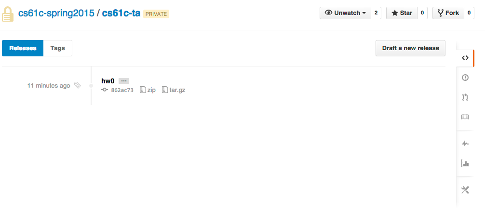

Due Sunday, February 1, 2015 @ 11:59pm
- Update 1/28 7:00 PM: Fixed wording of Problem 2.1 - "You would like
multiple waysto represent the temperature in degrees Celsius" - Update 1/27 2:30 PM: Added Submission Instructions for hw0.txt
- Update 1/21 12:30 PM: Fixed hex in table 2 (0xF5 -> 0xF6)
- Update 1/21 12:30 PM: Updated Problem 4 - removed underflow, only overflow can occur in fixed-width integer arithmetic.
Goals
This assignment is broken into two parts. The first part is a mini-bio designed to help the course staff get to know you better. The second part will give you practice with binary and the number representation schemes.
Overview/Files
The first part of this homework is hw0.pdf and will be submitted as a hardcopy to your TA.
You should writeup the rest of your solutions in hw0.txt. Please use the provided format in hw0.txt. File names are case-sensitive and the submission program will not accept your submission if your file names differ at all from those specified. Detailed submission instructions are given at the bottom of this page. Failure to follow these will result in loss of credit.
Exercises
Problem 0: Mini Biography
Fill out hw0.pdf and hand in to your TA during lab or discussion section. This part of the homework is due at the end of your second lab (Lab 1) on either 1/30, 2/2, or 2/3.
Problem 1: Number representation
Put your answers to the following questions in hw0.txt
Assume we are dealing with 8 bit numbers for this problem. Complete the following tables to practice encoding decimal values into unsigned and two's complement. The first table is unsigned and the second table is two's complement. The first row of each column has been filled out for you.
If a decimal number can't be encoded into binary and hexadecimal with the given scheme, write "n/a" for both columns.
Note: The '0b' and '0x' prefixes denote the following numeral as binary or hexadecimal respectively.
Unsigned| Decimal | Binary | Hexadecimal |
| 10 | 0b0000 1010 |
0x0A |
0b1111 0000 |
||
| 0x0F | |
| 0xA1 | |
| 250 |
|
|
0b1111 1111
|
||
| 0xCC | |
-35 |
||
128 |
||
0b0110 1001
|
Two's Complement
| Decimal | Binary | Hexadecimal |
| -10 | 0b1111 0110 |
0xF6 |
0b1111 0000 |
||
|
0x0F | |
| 0xA1 | |
| 250 |
|
|
0b1111 1111
|
||
| 0xCC | |
-35 |
||
128 |
||
0b0110 1001
|
Problem 2: Picking representations
Put your answers to the following questions in hw0.txt
Assume we are working with 8-bit numbers for the entirety of this question.
- You would like to represent the temperature in degrees Celsius:
UNSIGNEDorTWO'S COMPLEMENTorBOTH - You would like to maximize the range (distance between most negative represented number, and most positive represented number):
UNSIGNEDorTWO'S COMPLEMENTorBOTH - You would like to represent the number of boxes a factory has shipped:
UNSIGNEDorTWO'S COMPLEMENTorBOTH
Problem 3: Counting
Put your answers to the following questions in hw0.txt
- For a system of
n-digit unsigned base 4 numbers (n > 1), how many numbers can be represented? - For an
n-digit 2's complement binary number (n > 1), what is the number of negative integers? - For an
n-digit 2's complement number (n > 1), how many zeros are there? -
For an
n-digit 2's complement number (n > 1), what is the difference between the most positive number and the most negative number?
Problem 4: Overflow
The following addition and subtraction operations are to be carried out with 8-bit 2's complement numbers. For each operation, calculate the result and label as OVERFLOW or CORRECT
Example: 1 + 2 = 0b0000 0001 + 0b0000 0010 = 0b0000 0011 = 3, CORRECT
- 64 + 64 = ?
- -127 + 30 = ?
- -127 - 1 = ?
- 38 - 40 = ?
Submission
There are two steps required to submit hw0.txt. Failure to perform both steps will result in loss of credit:
First, you must submit using the standard unix submit program on the instructional servers. To do so, follow these instructions after logging into your cs61c-XX class account:
$ mkdir ~/files_for_submit $ cd ~/files_for_submit $ mkdir hw0 $ cd hw0 $ cp [Your hw0 text file location] hw0.txt # replace the braces with the location of your hw0.txt file $ submit hw0
Once you type submit hw0, follow the prompts generated by the submission system. It will tell you when your submission has been successful and you can confirm this by looking at the output of glookup -t.
Additionally, you must submit hw0.txt to your GitHub repository. To do so, follow these instructions after logging into your cs61c-XX class account:
$ cd ~/work # this is the location of your git repo on your class account $ mkdir hw0 $ cd hw0 $ cp [Your hw0 text file location] hw0.txt # replace the braces with the location of your hw0.txt file $ cd .. $ git add hw0/hw0.txt $ git commit -m "Homework 0 submission" $ git tag -f "hw0" # The tag MUST be "hw0". Failure to do so will result in loss of credit. $ git push origin master --tags # Note the "--tags" at the end. This pushes tags to github
What's the point of using tags? Using tags allows the course staff to determine which commit represents your hw0 submission, even if you make later commits to your repository.
At this point, your repo should look like the following:
Your "releases" page on GitHub (accessible by clicking on "Releases" from your repo's homepage) should look like the following. The "release" listed here reflects the tag we made called "hw0":
